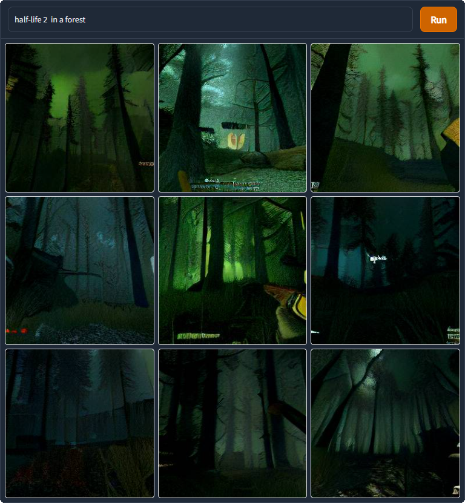
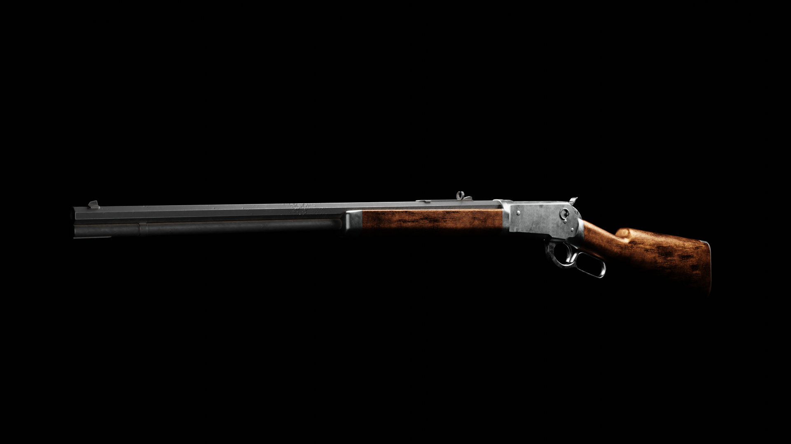
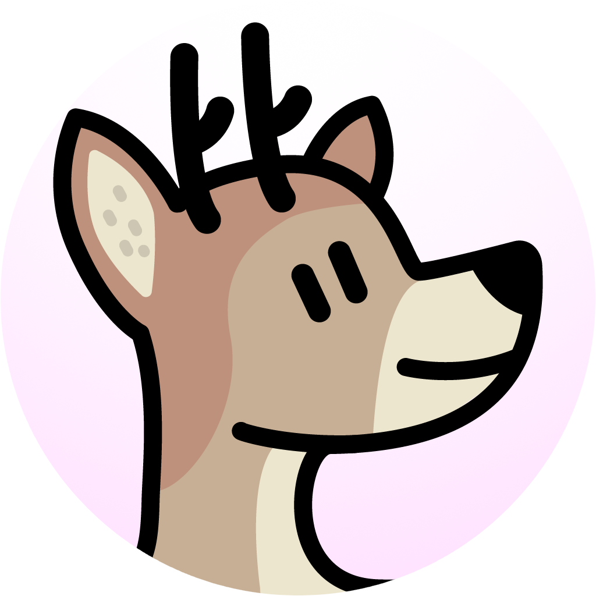
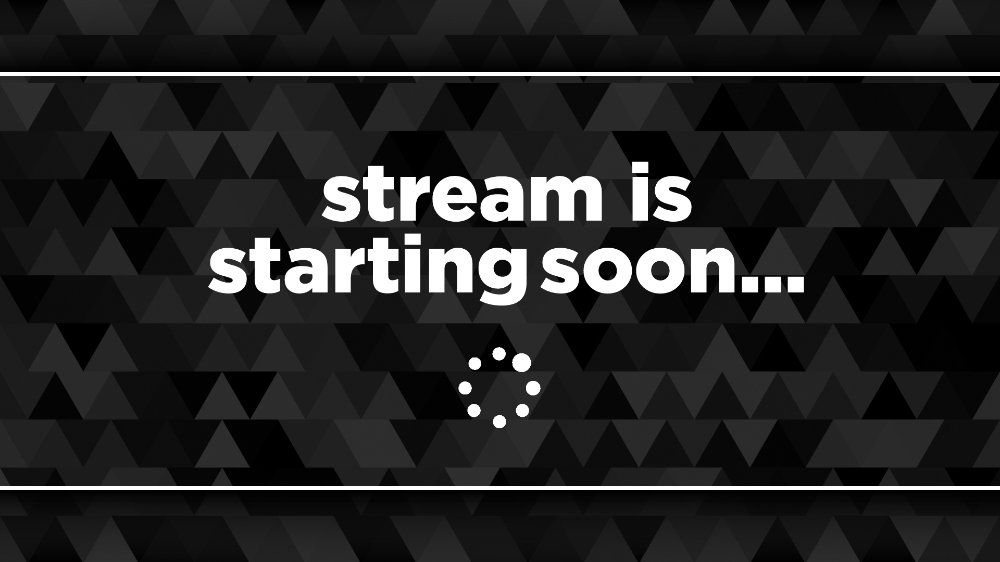
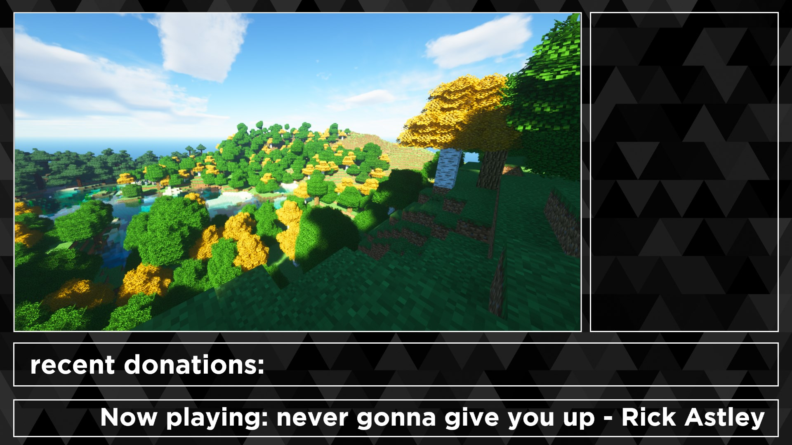
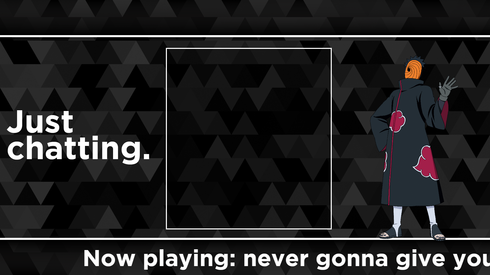
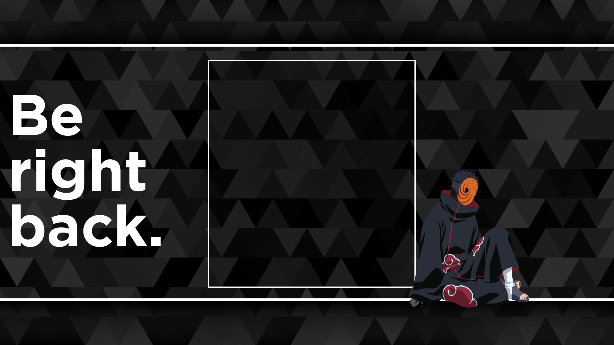
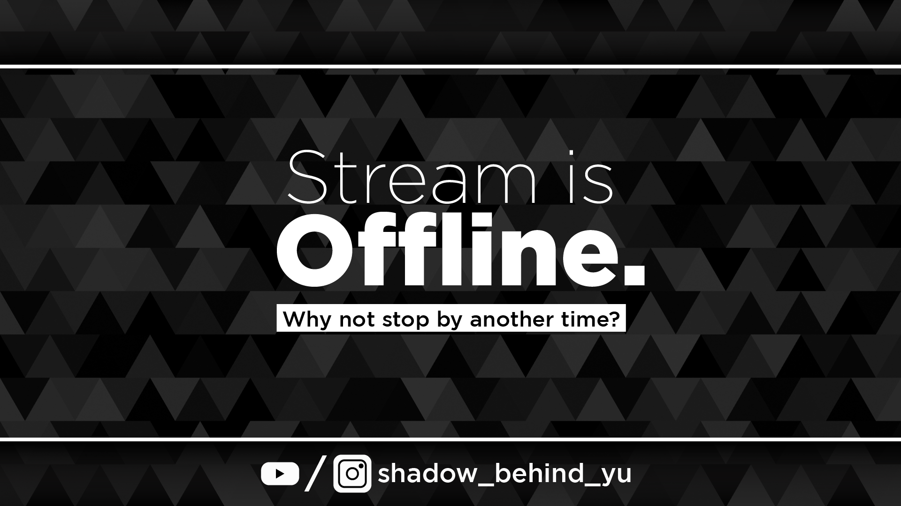

Hi I'm Emily, and I'm a passionate 3D artist and aspiring graphic
designer from germany. Please keep in mind that this website was
designed with the desktop format in mind. Anyways, here is some
of my work
bnuyy project

I made this scene because I wanted to take a school assignment beyond the scope of the assignment to make something visually more interesting than just a blank untextured model of an animal. This includes rigging, texturing, fur grooming, shading, and building a scene around it. The foliage assets and tree stump were taken from the Quixel Megascans Library to give the scene more detail. Overall I learned a lot about hair systems and hair grooming through this project.

The Owl House - King

After seeing the disney show "The Owl House", I decided to use this aside an opportunity to practice my sculpting and fur grooming skills. It is definitely a challenge to translate a 2d character into 3d while keeping the look as close to the original as possible. After sculpting, the model has been retopologized to reduce the face count by 99%.

Realistic wii remote

This was a modelling challenge to create a realistic wii remote. For reference I used various images online aswell as a real remote.
Forest Animation
This animation was created after taking some inspiration from ai generated images. The one that really caught my attention is the image in the center due to its atmospheric and ominous lighting which leads you to ask yourself "where is this light coming from and why?" you immediately want to know more, which makes it a great subject for a scene. My goals were to learn and practice how to deal with the organization of larger projects, aswell as practicing my rigging and animation skills.

Of course I had to create various assets for this scene like the weapon, which is a Winchester Model 1886 rifle. The modeling was done in blender and the texturing in Substance Painter. This weapon in particular has a complex shape due to the blend of flat and rounded shapes intersecting with eachother. I learned a lot about the approach of more complex shapes and how to deal with them.

Some other challenging parts in this project was the rigging for the arms as I'm not as experienced with it.
My Logo
This is my logo, used to represent myself as a graphic designer. I chose a simplistic deer because I personally like the animal. The rounded design is deliberate in order to appear more approachable and friendly. I based the logo off of an earlier drawing and vectorized it in Illustrator.


Sleek Stream Overlay
This is a so called "streaming overlay", which is essentially an overlay for live-streamers on platforms like twitch to give their streams their personal touch while also giving the viewers something pleasing to look at. The goal for this overlay was to create a monochrome minimalist yet also modern design to give off a professional look for the client. In total 5 seperate screens, an animated looping background, and scene transitions were created for the client.




